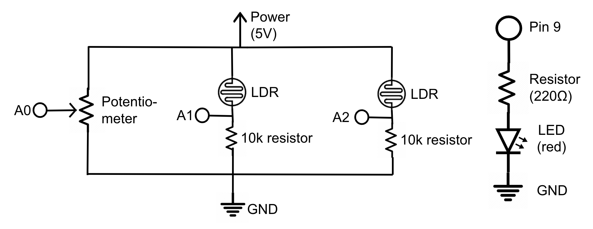

Overview
First, I created a schematic (below) for a potentiometer and 2 light
dependent resistors that read from analog pins A0, A1, and A2 respectively.
These are intended to change the RGB values on my website based on the
position of the potentiometer wiper and the light sensed from the LDR. Then,
there's a separate schematic for the red LED powered by pin 9, to which I have
coded a system where if the spacebar is pressed on my computer, the LED turns
on or off depending on its current state.
The LDRs typically require 10kΩ resistors because it provides a stable
reference point to compare the LDR's variable resistance against, enabling
accurate light level detection. The red LED has a 1.8V drop, so 5V - 1.8V =
0.02A * R → 3.2V = 0.02A * R → R = 3.2V / 0.02A → R = 160Ω. Therefore, I used a
220Ω resistor for the LED, the closest value over 160.

Schematic of a potentiometer and 2 light dependent
resistors, and an LED
Coding the Firmware
I first coded the firmware in an .ino file to send sensor data from the
A0, A1, and A2 serially (which my webpage can take from). Then I
added the LED stuff, so the LED turns on if the firmware can read data
available on the serial port, and if a specific command ("T") I encoded has been
sent over by webserial.
// pin for LED
const int ledPin = 9;
// current state of LED
bool ledState = false;
void setup() {
// setting LED pin as output
pinMode(ledPin, OUTPUT);
// Start serial communication at 9600 baud
Serial.begin(9600);
}
void loop() {
// Check if data is available on the serial port
if (Serial.available() > 0) {
// reading the incoming byte
char command = Serial.read();
// // If the command is 'T', toggle the LED
if (command == 'T') {
// change the LED state
ledState = !ledState;
// switches the LED from high to low or low to high depending on original state
digitalWrite(ledPin, ledState ? HIGH : LOW);
}
}
// Send sensor data: Read three analog pins (A0, A1, A2)
Serial.print(analogRead(A0));
Serial.print(",");
// reading A1
Serial.print(analogRead(A1));
Serial.print(",");
// reading A2
Serial.println(analogRead(A2));
// Short delay before next loop iteration for stability
delay(50);
}
My Webpage's p5.js Code
Below is my p5.js code which uses webserial so my webpage can interact with
the real world and vice versa. The foundation of this is example code, but most
notably when I created my red, green, and blue constants, it starts by converting
the string received from the serial port into a number. The analog pins always
give a value between 0-1023. I map the raw sensor value (assumed to normally
lie between 512 and 1023) to linearly convert it to a range of 0 to 255. Then
I constrined this value to stay between 0 and 255 since I found I was getting
negative numbers, which is the expected range. These 0-255 values set up the
RGB colors on the webpage.
I also created a new function called keyPressed that checks whether the
spacebar has been pressed, and if it has, it sends a command ("T") over
serial, prompting the LED to turn on.
const BAUD_RATE = 9600; // This should match the baud rate in your Arduino sketch
let port, connectBtn, circleDiameter; // Declare global variables
function setup() {
setupSerial(); // Run our serial setup function (below)
// Create a canvas that is the size of our browser window.
createCanvas(windowWidth, windowHeight);
// Set our circle diameter based on the window dimensions
circleDiameter = min(windowWidth, windowHeight) * 0.5;
// p5 text settings
textFont("system-ui", 50);
textStyle(BOLD);
textAlign(CENTER, CENTER);
// Set the canvas blend mode
blendMode(ADD);
}
function draw() {
const portIsOpen = checkPort(); // Check whether the port is open
if (!portIsOpen) return; // If the port is not open, exit the draw loop
let str = port.readUntil("\n"); // Read from the port until the newline
if (str.length == 0) return; // If we didn't read anything, return.
let rgbArray = str.trim().split(","); // Trim whitespace and split on commas
// Convert each element to a number, map it to the RGB range, and round to nearest integer
const red = constrain(round(map(Number(rgbArray[0]), 512, 1023, 0, 255)), 0, 255);
const green = constrain(round(map(Number(rgbArray[1]), 512, 1023, 0, 255)), 0, 255);
const blue = constrain(round(map(Number(rgbArray[2]), 512, 1023, 0, 255)), 0, 255);
clear(); // Clear the canvas
background(0); // Make the background black
translate(windowWidth / 2, windowHeight / 2); // Move the origin to the center
// Display the RGB values as text on top
fill(255);
stroke(0);
strokeWeight(4);
text(`${red}, ${green}, ${blue}`, 0, -circleDiameter * 0.75);
// Red circle
fill(red, 0, 0);
circle(0, circleDiameter / 4, circleDiameter);
// Green circle
rotate((2 * PI) / 3);
fill(0, green, 0);
circle(0, circleDiameter / 4, circleDiameter);
// Blue circle
rotate((2 * PI) / 3);
fill(0, 0, blue);
circle(0, circleDiameter / 4, circleDiameter);
}
// Three helper functions for managing the serial connection.
function setupSerial() {
port = createSerial();
// Check to see if there are any ports we have used previously
let usedPorts = usedSerialPorts();
if (usedPorts.length > 0) {
// If there are ports we've used, open the first one
port.open(usedPorts[0], BAUD_RATE);
}
// Create a connect button
connectBtn = createButton("Connect to Arduino");
connectBtn.position(5, 5); // Position the button in the top left of the screen.
connectBtn.mouseClicked(onConnectButtonClicked); // When the button is clicked, run the onConnectButtonClicked function
}
function checkPort() {
if (!port.opened()) {
// If the port is not open, change button text
connectBtn.html("Connect to Arduino");
// Set background to gray
background("gray");
return false;
} else {
// Otherwise we are connected
connectBtn.html("Disconnect");
return true;
}
}
function onConnectButtonClicked() {
// When the connect button is clicked
if (!port.opened()) {
// If the port is not opened, open it
port.open(BAUD_RATE);
} else {
// Otherwise, close it!
port.close();
}
}
// Looking for key presses to turn the LED on/off
function keyPressed() {
// Checking if the spacebar was pressed
if (key === ' ') {
// Ensure the port is open before sending data
if (port && port.opened()) {
// Send the toggle command ("T") over serial
port.write("T");
// telling the console the command was sent
console.log("Sent toggle LED command");
} else {
// telling the console the serial port is not connected
console.log("Serial port not connected.");
}
}
}